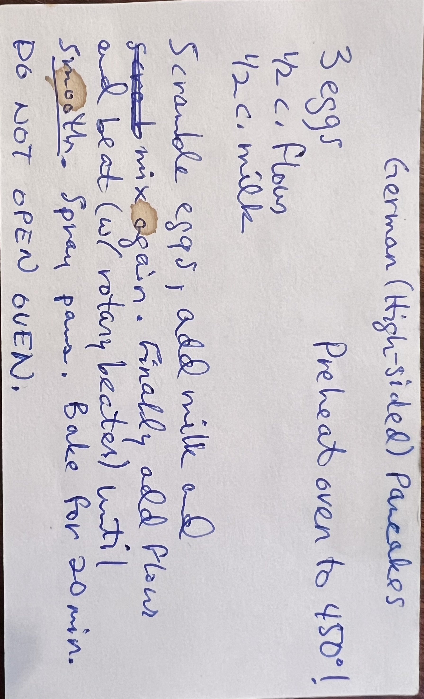
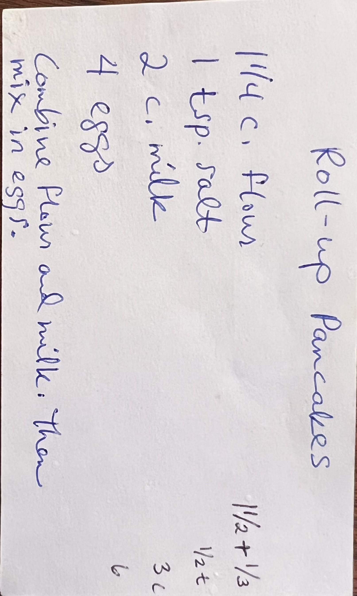
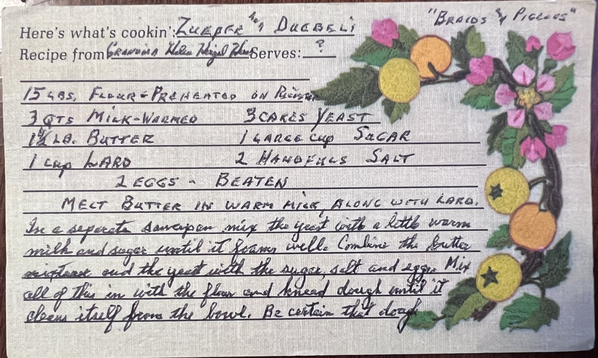
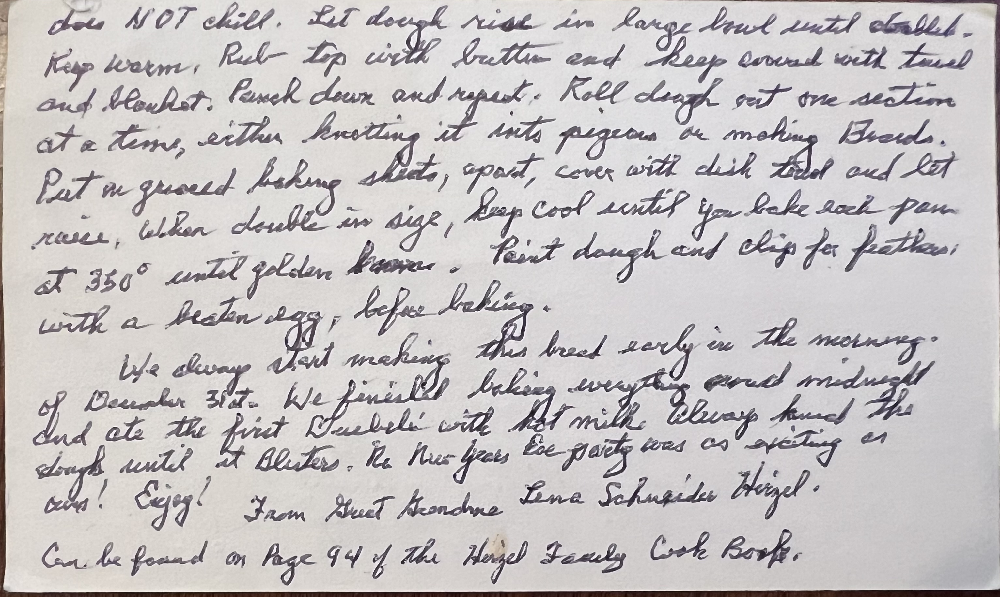
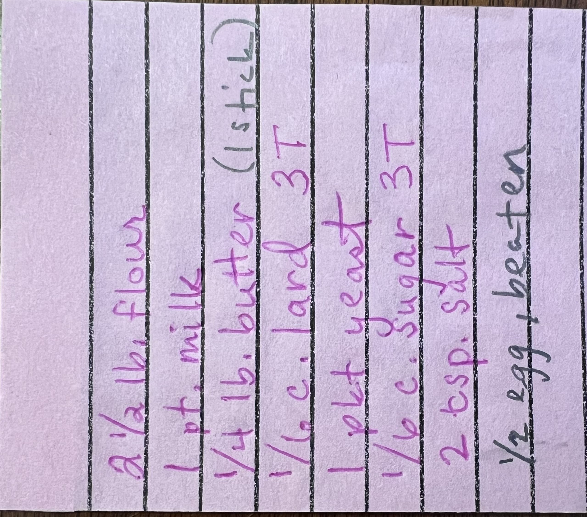

Welcome to the Family Recipe Box! You will find many of our favorite recipes here. The recipes have been sorted into categories to help you find them. Enjoy!




The measurements below have been scaled down to fit well in a standard size KitchenAid mixer.
